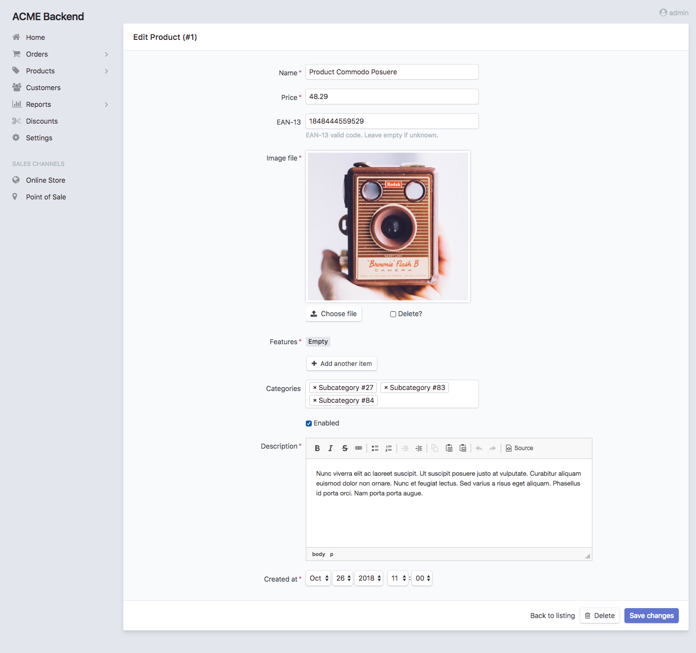
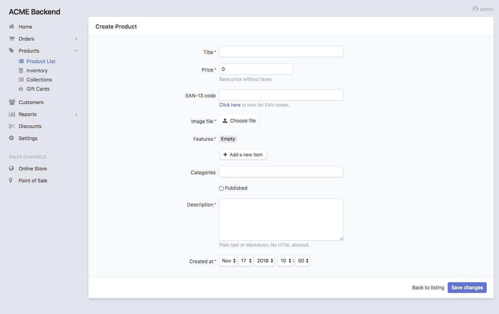
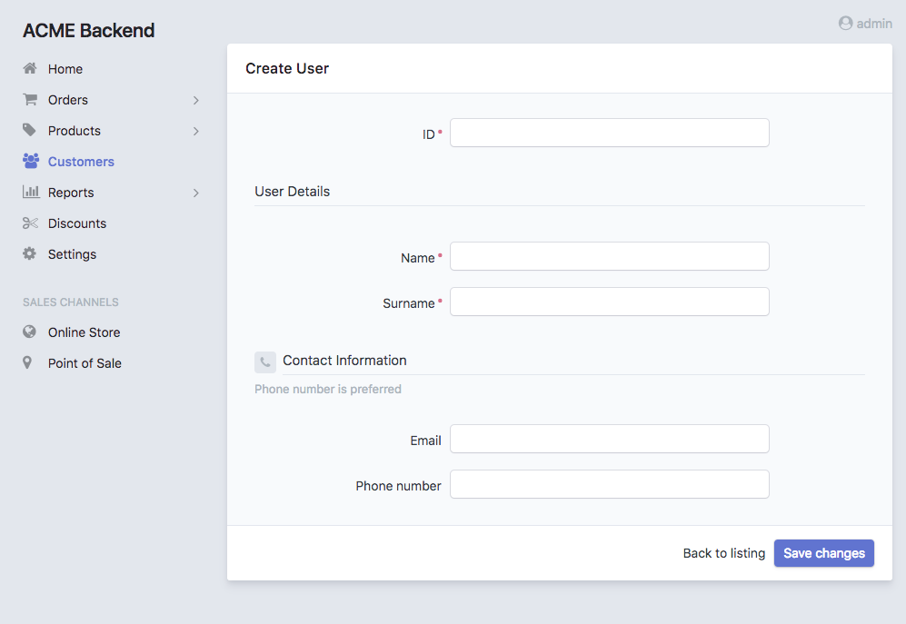
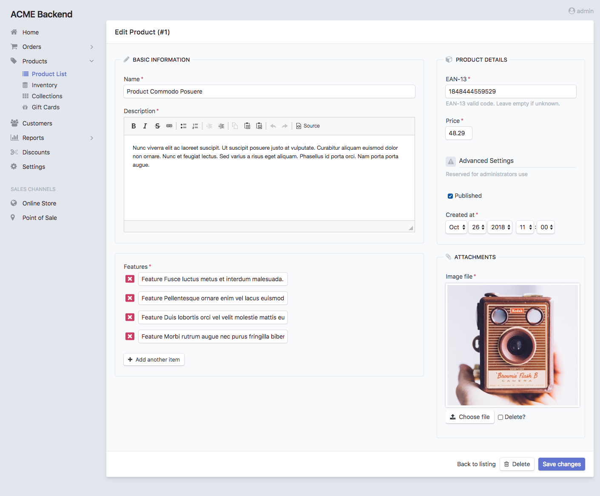

Chapter 6. Edit and New Views Configuration¶
This chapter explains how to customize the read-and-write views: edit and
new. You’ll learn all their configuration options and how to override or
tweak their templates.
Edit, New and Form Views¶
The Edit View is displayed when modifying the contents of any existing entity. The New View is used when creating new items of the given entity. The design of both views is almost identical:
The Special form View¶
Most of the times you apply the same or very similar configuration to both the
edit and new views. Instead of duplicating the configuration, you can
use the special form view:
# config/packages/easy_admin.yaml
easy_admin:
entities:
Customer:
class: App\Entity\Customer
form: # <-- 'form' is applied to both 'new' and 'edit' views
fields:
- 'id'
- { property: 'email', type: 'email', label: 'Contact' }
# ...
# ...
Any option defined in the form view is copied into the new and edit
views. However, any option defined in the edit and new view overrides
the corresponding form option. In other words, always use the form
action to define the common configuration, and then use the new and edit
views to define just the specific options you want to override:
# config/packages/easy_admin.yaml
easy_admin:
entities:
Customer:
class: App\Entity\Customer
form:
title: 'Add customer'
form_options: { validation_groups: ['Default'] }
new:
form_options: { validation_groups: ['Default', 'Customer'] }
edit:
title: 'Edit customer'
# ...
The above configuration is equivalent to the following:
# config/packages/easy_admin.yaml
easy_admin:
entities:
Customer:
class: App\Entity\Customer
new:
title: 'Add customer'
form_options: { validation_groups: ['Default', 'Customer'] }
edit:
title: 'Edit customer'
form_options: { validation_groups: ['Default'] }
# ...
The merging of the form fields configuration is done recursively, so you can
change or add any option to any property. In addition, the following processing
takes place:
All the fields defined in the
formview are copied in the same order into theeditandnewviews.Any field defined in the
editornewview which is not present in theformview is added after theformfields.The
editandnewviews can remove any field defined in theformview just by prefixing the name of the removed field with a dash-(e.g. add a property called-nameto remove thenameproperty defined inform)
Consider the following complex form field configuration:
# config/packages/easy_admin.yaml
easy_admin:
entities:
Customer:
class: App\Entity\Customer
form:
fields:
- id
- { property: 'name', icon: 'user' }
- { property: 'email', css_class: 'input-large' }
new:
fields:
- '-id'
- { property: 'email', type_options: { required: false } }
edit:
fields:
- { property: 'name', icon: 'customer' }
- { property: 'email', help: 'Phone number is preferred' }
- phone
# ...
The above configuration is equivalent to the following:
# config/packages/easy_admin.yaml
easy_admin:
entities:
Customer:
class: App\Entity\Customer
new:
fields:
- { property: 'name', icon: 'user' }
- { property: 'email', css_class: 'input-large', type_options: { required: false } }
edit:
fields:
- id
- { property: 'name', icon: 'customer' }
- { property: 'email', css_class: 'input-large', help: 'Phone number is preferred' }
- phone
# ...
General Configuration¶
In order to make examples more concise, this section only shows the
configuration for the special form view, but you can apply the same options
to the other edit and new views.
Customize the Title of the Page¶
This option refers both to the value of the <title> element and to the visible
title displayed at the top of the page. By default the title is just the name of
the entity. Define the title option to set a custom page title:
# config/packages/easy_admin.yaml
easy_admin:
entities:
Customer:
class: App\Entity\Customer
label: 'Customers'
form:
title: "Add/edit customers"
# ...
The title option can include the following special variables:
%entity_label%, resolves to the value defined in thelabeloption of the entity. If you haven’t defined it, this value will be equal to the entity name. In the example above, this value would beCustomers.%entity_name%, resolves to the entity name, which is the YAML key used to configure the entity in the backend configuration file. In the example above, this value would beCustomer.%entity_id%, it’s only available for theeditview and it resolves to the value of the primary key of the entity being edited. Even if the option is calledentity_id, it also works for primary keys with names different fromid.
Caution
In Symfony applications, YAML values enclosed with % and % have a
special meaning (they are considered container parameters). Escape these
values doubling the % characters:
# config/packages/easy_admin.yaml
easy_admin:
entities:
Customer:
class: App\Entity\Customer
label: 'Customers'
form:
title: '%%entity_label%% listing'
# ...
If several entities use the same custom title, you can define the default title
for all entities in the global edit.title and new.title options (these
global titles are always overridden by the title defined by each entity):
# config/packages/easy_admin.yaml
easy_admin:
edit:
title: '%%entity_label%%_edit'
new:
title: 'New %%entity_label%%'
Display a Help Message in the Page¶
Entities can define a global help message that is displayed below the title of the page. This is useful to add instructions or warning messages for the end users (e.g. “The upload process can take a lot of time (don’t close the browser window)”).
The help message is defined with the help configuration option, which can be
added to the entity (all views display the same message) and to each of the
entity views:
# config/packages/easy_admin.yaml
easy_admin:
entities:
Customer:
class: App\Entity\Customer
help: 'Global message displayed in all views'
# ...
form:
help: 'The form view overrides the global help message'
# ...
edit:
# 'help' is not defined, so the global help message is displayed
# ...
new:
# use the null value to not display the inherited global help message
help: null
# ...
# ...
Customize the Properties Displayed¶
By default, the edit and new views display all the entity properties.
Use the fields option to explicitly set the properties to display in each
view:
# config/packages/easy_admin.yaml
easy_admin:
entities:
Customer:
class: App\Entity\Customer
form:
fields: ['firstName', 'lastName', 'phone', 'email']
# ...
This option is also useful to reorder the form fields, because by default they are displayed in the same order as defined in the related Doctrine entity.
Note
Fields that represent an association with another entity are displayed as
<select> lists. For that reason, you must define the __toString()
magic method in any entity which is used in a Doctrine relation. Otherwise
you’ll see the following error message:
Catchable Fatal Error: Object of class XY could not be converted to string
Virtual Properties¶
The fields option can also include properties that are not defined in the
Doctrine entities. These properties are called “virtual properties” and the only
requirement is that they must define a setter method for them. For example, if
your entity contains a setName() method but not a name property, the
fields option can include the name virtual property to set its value.
Note
The values or virtual properties are set using the PropertyAccess component
from Symfony, which requires to follow a strict syntax for setter names:
set + camelized version of the property name. Example: name ->
setName(); firstName -> setFirstName(); first_and_last_name ->
setFirstAndLastName().
Defining Custom Form Options¶
By default, the forms built to create and edit entities only define the
data_class configuration option:
$form = $this->createFormBuilder($entity, array(
'data_class' => 'App\Entity\Customer',
))
-> ...
If you need to pass custom options to the forms, define the form_options
option under the edit, new or form options:
# config/packages/easy_admin.yaml
easy_admin:
entities:
Customer:
class: App\Entity\Customer
form:
form_options: { validation_groups: ['Default', 'my_validation_group'] }
# ...
The above example makes the backend use the following PHP code to build the form:
$form = $this->createFormBuilder($entity, array(
'data_class' => 'App\Entity\Customer',
'validation_groups' => array('Default', 'my_validation_group'),
))
-> ...
Customize the Form Fields¶
When form fields are not configured explicitly, the backend renders them with the most appropriate widget according to their data types. If you prefer to control their appearance, start by using the extended field configuration:
# config/packages/easy_admin.yaml
easy_admin:
entities:
Customer:
class: App\Entity\Customer
form:
fields: ['name', { property: 'email', label: 'Contact' }]
# ...
Instead of using a string to define the property (e.g. 'email') you have to
define a hash with the name of the property ({ property: 'email' }) and the
options you want to define for it ({ ..., label: 'Contact' }).
If your entity contains lots of properties, consider using the alternative YAML sequence syntax to improve the legibility of your backend configuration. The following example is equivalent to the above example:
# config/packages/easy_admin.yaml
easy_admin:
entities:
Customer:
class: App\Entity\Customer
form:
fields:
- name
- { property: 'email', label: 'Contact' }
# ...
These are the options that you can define for each field:
property(mandatory): the name of the property to bet set (innewview) or modified (ineditview). This is the only mandatory option when using the extended field configuration format.label(optional): the content displayed in the<label>element of the form field. The default label is the “humanized” version of the property name (e.g.publishedis displayed asPublishedanddateOfBirthasDate of birth).If the form field renders a collection of items, the numeric auto-increment label of the collection items is hidden by default. If you want to display it, set the
entry_options.labeloption totrue:- { property: '...', type: 'collection', type_options: { entry_options: { label: true } }help(optional): the help message displayed below the form field.css_class(optional): the CSS class applied to the parent HTML element that contains the entire form field. For example, when using the default Bootstrap form theme, this value is applied to the<div>element which wraps the label, the widget and the error messages of the field.type(optional): the Symfony Form type used to render this field. In addition to its fully qualified class name (e.g.Symfony\Component\Form\Extension\Core\Type\EmailType), you can also use the short type name (e.g.email) (the map between names and classes is done internally by the bundle). The allowed values are:Any of the Symfony Form types.
Any of the custom EasyAdmin form types:
easyadmin_autocomplete(they are explained later in this chapter).
type_options(optional), a hash with the options passed to the Symfony Form type used to render the field.
The type_options is the most powerful option because it literally comprises
tens of options suited for each form type:
# config/packages/easy_admin.yaml
easy_admin:
entities:
Customer:
class: App\Entity\Customer
form:
fields:
- 'id'
- { property: 'email', type: 'email', type_options: { trim: true } }
- { property: 'interests', type_options: { expanded: true, multiple: true } }
- { property: 'updated_at', type_options: { widget: 'single_text' } }
Read the Symfony Form types reference to learn about all the available options, their usage and allowed values.
Tip
Symfony makes Doctrine relations nullable by default. Instead of adding the
type_options: { required: true } option to all those fields, it’s simpler
to add @ORM\JoinColumn(nullable=false) to the property that defines the
relation in the entity class.
Formatting Dates and Numbers¶
Customizing Date and Time Properties¶
Unlike the list, search and show views, there are no configuration
options to define the date/time format for edit and new form fields. You
must use instead the options defined by Symfony’s DateTimeType, DateType
and TimeType types.
For example, to display your dates as a single <input> text element, define
the widget form field option (commonly used together with format):
# config/packages/easy_admin.yaml
easy_admin:
entities:
Event:
edit:
fields:
- { property: 'startsAt', type_options: { widget: 'single_text' } }
# ...
Customizing Numeric Properties¶
Similarly, there are no configuration options to define the formatting of the
numeric values for the edit and new views. You must use instead the
options defined by Symfony’s NumberType, IntegerType, MoneyType and
PercentType types.
For example, to display a numeric property that stores prices, you can define
the currency option of the MoneyType form type:
# config/packages/easy_admin.yaml
easy_admin:
entities:
Product:
edit:
fields:
- { property: 'price', type: 'money', type_options: { currency: 'EUR' } }
# ...
Custom Doctrine Types¶
When your application defines custom Doctrine DBAL types, you must also define
a custom form type for them before using them as form fields. Imagine that your
application defines a UTCDateTime type to convert the timezone of datetime
values to UTC before saving them in the database.
If you add that type in a property as follows, you’ll get an error message
saying that the utcdatetime type couldn’t be loaded:
# config/packages/easy_admin.yaml
easy_admin:
entities:
Customer:
class: App\Entity\Customer
form:
fields:
- { property: 'createdAt', type: 'utcdatetime' }
# ...
# ...
This problem is solved defining a custom utcdatetime Form Type. Read the
How to Create a Custom Form Field Type article to learn how to define
custom form types.
EasyAdmin Form Types¶
In addition to the Symfony Form types, fields can use any of the following types defined by EasyAdmin.
Autocomplete¶
It’s similar to Symfony’s Entity type, but the values are loaded on demand
via Ajax requests based on the user’s input. This type is useful to improve the
backend performance when a field is related to an entity with lots of database
records:
# config/packages/easy_admin.yaml
easy_admin:
entities:
Product:
class: App\Entity\Product
form:
fields:
- { property: 'category', type: 'easyadmin_autocomplete' }
# ...
# ...
The easyadmin_autocomplete type configures the class of the related entity
automatically. If you prefer to define it explicitly, do it in the type options:
# ...
- { property: 'category', type: 'easyadmin_autocomplete', type_options: { class: 'App\Entity\Category' } }
When the user types in an autocomplete field, EasyAdmin performs a fuzzy search on all the properties of the related entity. This is the same behavior applied when using the backend search form.
The autocomplete action returns to the browser a JSON array of
{ id: '...', text: '...' } tuples. The id is used as the form field value
and the text is the value displayed to the user.
By default, the entity’s primary key is used for the id property and the
(string) $entity conversion is used for the text property. Therefore,
you must define the __toString() method in all the entities used in
autocomplete form fields.
If the number of autocomplete suggestions is large, they are paginated to
display a maximum of 10 results. Define the show.max_results option to
change this value (globally or per entity):
# config/packages/easy_admin.yaml
easy_admin:
show:
max_results: 20
entities:
Category:
show:
max_results: 5
# ...
Advanced Form Design¶
Selecting the Form Theme¶
By default, forms are displayed using a proprietary form theme compatible with the Bootstrap 4 CSS framework.
The form style can be changed with the form_theme design option:
# config/packages/easy_admin.yaml
easy_admin:
design:
# ...
# this is the default form theme used by backends
form_theme: '@EasyAdmin/form/bootstrap_4.html.twig'
# you can use your own form theme
form_theme: '@App/form/custom_layout.html.twig'
# you can also define an array of form themes to use all of them
form_theme:
- 'admin/form/custom_layout.html.twig'
- 'form_div_layout.html.twig'
- '@EasyAdmin/form/bootstrap_4.html.twig'
Customizing the Form Fields¶
Unlike the properties displayed on the list, search and show views,
you can’t easily override the template fragment used to render each form field.
Instead, EasyAdmin forms follow the same mechanism defined by Symfony to
customize individual form fields.
Imagine a form field where you want to include a <a> element that links to
additional information. If the field is called title and belongs to a
Product entity, the configuration would look like this:
# config/packages/easy_admin.yaml
easy_admin:
# ...
entities:
Product:
class: App\Entity\Product
form:
fields:
- { property: title, type_options: { block_name: 'custom_title' } }
# ...
The next step is to define the template fragment used by that field, which requires to know the form fragment naming rules defined by Symfony:
{# templates/admin/form.html.twig #}
{% block _product_custom_title_widget %}
{# ... #}
<a href="...">More information</a>
{% endblock %}
Finally, add this custom theme to the list of themes used to render backend forms:
# config/packages/easy_admin.yaml
easy_admin:
# ...
design:
form_theme:
- '@EasyAdmin/form/bootstrap_4.html.twig'
# the following Twig template can be located anywhere in the application.
# it can also be added to the twig.form_themes option to use it in the
# entire application, not only the backend
- 'admin/form.html.twig'
Customizing the Form Layout¶
The default form layout is pretty basic: fields are displayed in the same order they were defined and they span the full browser window width. However, forms can also include special design elements (tabs, groups, sections) to create more advanced layouts.
Form Sections¶
This design element helps you divide a long form into different sections using
a subtle line. They are defined with elements of type section:
# config/packages/easy_admin.yaml
easy_admin:
# ...
entities:
Customer:
class: App\Entity\Customer
form:
fields:
- id
- { type: 'section', label: 'User Details' }
- name
- surname
- { type: 'section', label: 'Contact information', icon: 'phone',
help: 'Phone number is preferred' }
- email
- phoneNumber
The configurable options of this element are:
label(optional,string), leave it empty if you only want to display a separator line.icon(optional,string), the name of the FontAwesome icon without thefa-prefix (e.g. don’t usefa fa-userorfa-userbutuser).css_class(optional,string), you can apply multiple classes separating them with white spaces.help(optional,string), text displayed to describe the form section or display helpful messages. It can include HTML elements.
A form that includes sections is still displayed as a single form that spans the entire available width. Multi-column forms are created with “groups” as explained below.
Form Groups¶
This element groups one or more fields using <fieldset> elements and
displays them separately from the rest of the form fields. It’s useful to create
multi-column forms and to create very advanced layouts. They are defined with
elements of type group:
# config/packages/easy_admin.yaml
easy_admin:
entities:
Customer:
class: App\Entity\Customer
form:
fields:
- { type: 'group', columns: 4, label: 'Basic information' }
- id
- name
- surname
- { type: 'group', label: 'Contact information', icon: 'phone', columns: 6 }
- email
- phoneNumber
The configurable options of this element are:
label(optional,string), leave it empty if you only want to display a the<fieldset>without the<legend>element.icon(optional,string), the name of the FontAwesome icon without thefa-prefix (e.g. don’t usefa fa-userorfa-userbutuser).css_class(optional,string), you can apply multiple classes separating them with white spaces.columns(optional,integer), the number of columns that spans this form group. The default value is12, which spans the whole row. Ideal to display complex forms as multi-column forms.help(optional,string), text displayed to describe the form group or display helpful messages. It can include HTML elements.
Tip
Because of the way CSS works, when creating multi-column forms is common to
have ugly gaps between some rows and columns. Use the .w-100 CSS class
provided by Bootstrap 4 to force the form group to be displayed in a new row:
# ...
- { type: 'group', css_class: 'w-100 ...' }
This solves most of the issues, but sometimes you might be forced to also reorder the form group positions.
Form Tabs¶
This element groups one or more fields and displays them in a separate tab. You
can combine it with the other elements (tabs can contain groups, but no the other
way around) to create clean interfaces when forms contains lots of fields. They
are defined with elements of type tab:
# config/packages/easy_admin.yaml
easy_admin:
entities:
User:
class: App\Entity\User
form:
fields:
- { type: 'tab' , label: 'Basic Information' }
- id
- name
- surname
- { type: 'tab', label: 'Contact Information', icon: 'phone' }
- email
- phone
The configurable options of this element are:
label(mandatory,string), displayed as the clickable name of the tab.icon(optional,string), the name of the FontAwesome icon without thefa-prefix (e.g. don’t usefa fa-userorfa-userbutuser).css_class(optional,string), you can apply multiple classes separating them with white spaces.help(optional,string), text displayed to describe the form tab or display helpful messages. It can include HTML elements.
Design elements can be combined to display sections inside groups and create advanced layouts:
Advanced Design Configuration¶
The previous sections explain how to customize the design of the forms and their
fields using Symfony’s Form component features. EasyAdmin also lets you
customize the entire edit and new views, similar to how the other
views (list, show, etc.) are customized.
EasyAdmin defines several Twig templates to create its interface. These are the
templates related to edit and new views:
@EasyAdmin/default/layout.html.twig, the common layout that decorates the rest of the main templates;@EasyAdmin/default/new, renders the page where new entities are created;@EasyAdmin/default/edit, renders the page where entity contents are edited;
Note
The special form view doesn’t have a template associated. The template
configured for form will be used for both edit and new unless
they override that template in their own configuration.
Depending on your needs, there are several customization options:
Override the default EasyAdmin templates using Symfony’s overriding mechanism. Useful to add or change minor things in the default interface.
Use your own templates to display the edit/new views and all their elements. Useful if you want to customize the interface entirely.
Overriding the Default Templates Using Symfony’s Mechanism¶
Symfony allows to override any part of third-party bundles. To override one
of the default EasyAdmin templates, create a new template inside
templates/bundles/EasyAdminBundle/default/ with the same path as the
template to override. Example:
your-project/
├─ ...
└─ templates/
└─ bundles/
└─ EasyAdminBundle/
└─ default/
├─ new.html.twig
└─ edit.html.twig
Tip
Add an empty {{ dump() }} call in your custom templates to know which
variables are passed to them by EasyAdmin.
Instead of creating the new templates from scratch, you can extend from the
original templates and change only the parts you want to override. However, you
must use a special syntax inside extends to avoid an infinite loop:
{# templates/bundles/EasyAdminBundle/default/layout.html.twig #}
{# DON'T DO THIS: it will cause an infinite loop #}
{% extends '@EasyAdmin/default/layout.html.twig' %}
{# DO THIS: the '!' symbol tells Symfony to extend from the original template #}
{% extends '@!EasyAdmin/default/layout.html.twig' %}
{% block sidebar %}
{# ... #}
{% endblock %}
Using your Own Templates to Display the list/search/show Views¶
Add the templates option (globally or only to some entities) to define the
path of the Twig template used to render each part of the interface:
# config/packages/easy_admin.yaml
easy_admin:
design:
# these custom templates are applied to all entities
templates:
edit: 'admin/custom_edit_form.html.twig'
entities:
Customer:
# ...
# these custom templates are only applied to this entity and
# they override any global template defined in 'design.templates'
templates:
edit: 'admin/customer/edit.html.twig'
new: 'admin/customizations/customer_new.html.twig'
The name of the config option matches the name of the template files inside
src/Resources/views/ (e.g. layout, edit, new, etc.) The value of
the options can be any valid Twig template path.
Tip
Add an empty {{ dump() }} call in your custom templates to know which
variables are passed to them by EasyAdmin.
Instead of creating the new templates from scratch, you can extend from the
original templates and change only the parts you want to override. Suppose you
only want to change the way titles are displayed on the new view. To do so,
create the following new.html.twig template extending from the default one
and override only the content_title Twig block:
{# templates/admin/new.html.twig #}
{% extends '@EasyAdmin/default/new.html.twig' %}
{% block content_title %}
{# ... customize the content title ... #}
{% endblock %}
Next chapter: Chapter 7. Actions Configuration